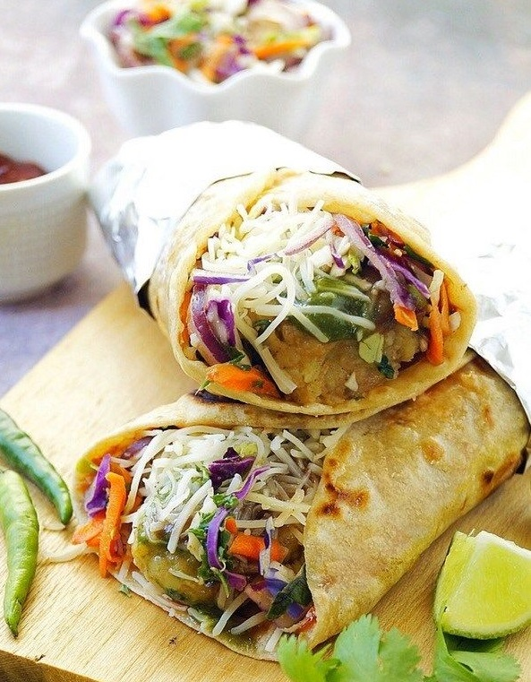

|
 |
 |
| Bhelpuri is a savoury snack, originating from the Indian subcontinent,
and is also a type of chaat. It is made of puffed rice,vegetables and a tangy tamarind sauce.Bhel is often
identified with the beaches of Mumbai, such as Chowpatty or Juhu.Dry bhel is made from bhadang, a spicy namkeen
from Western Maharashtra,and is consumed after garnishing with onions, coriander and lemon juice...more |
Chinese bhel is a fast food item of Northeast Indian origin. It is a variant of the chop suey. It is also widely popular in Mumbai.
Chinese bhel usually consists of deep fried noodles, finely chopped onions, shredded cabbage, sliced green pepper and carrots, soy,
tomato and red chili sauce, salt and black pepper powder, ajinomoto and garlic paste in varying quantities...more |
A kati roll is a street-food dish originating from Kolkata, West Bengal. In its original form, it is a
skewer-roasted kebab wrapped in a paratha bread, although over the years many variants have evolved all of
which now go under the generic name of kati roll. Today, mostly any wrap containing a filling enfolded in
an Indian flatbread (roti) is called a kati roll...more |